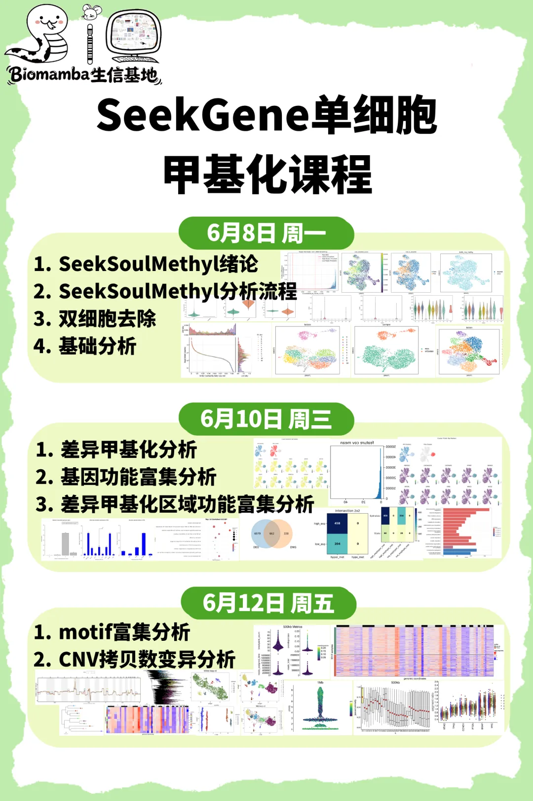
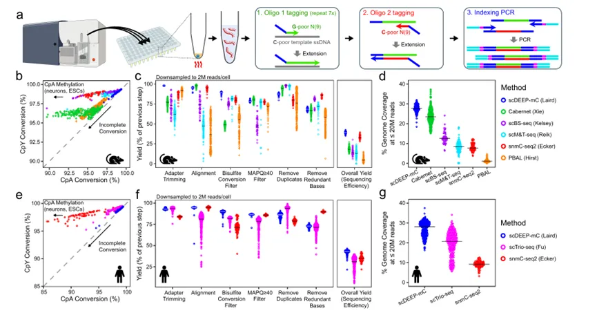
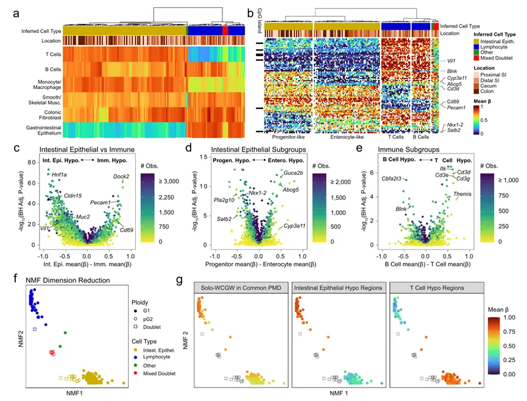
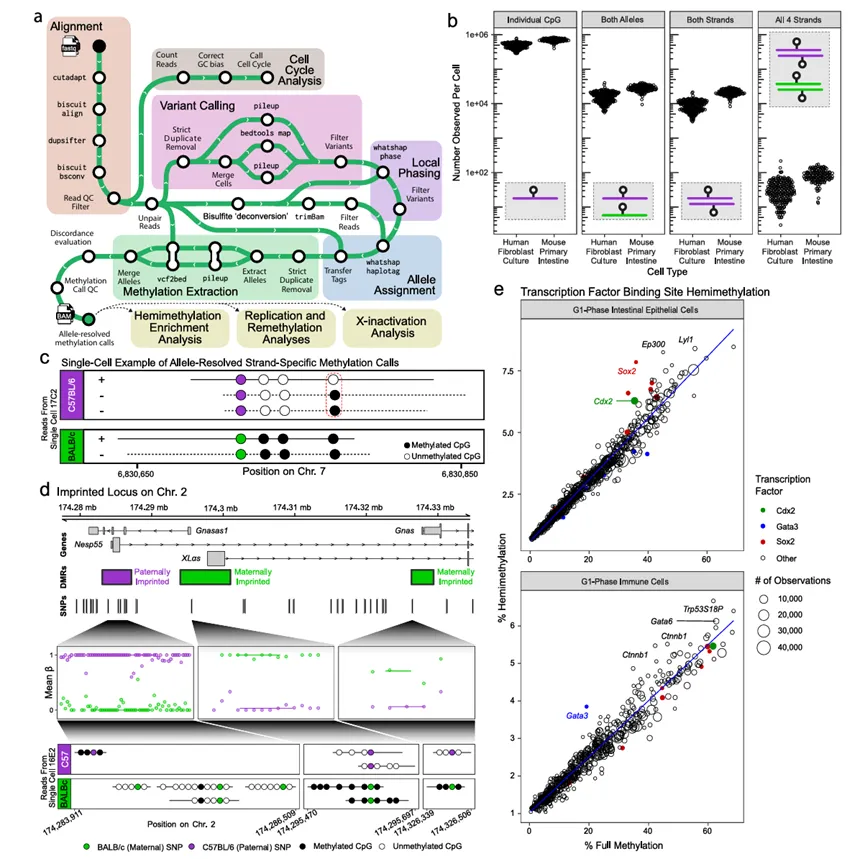
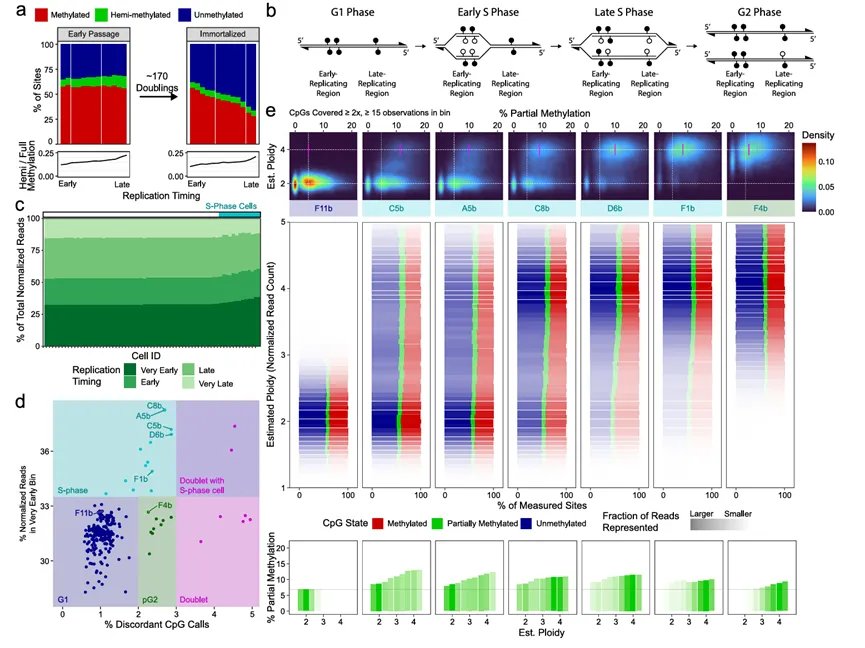
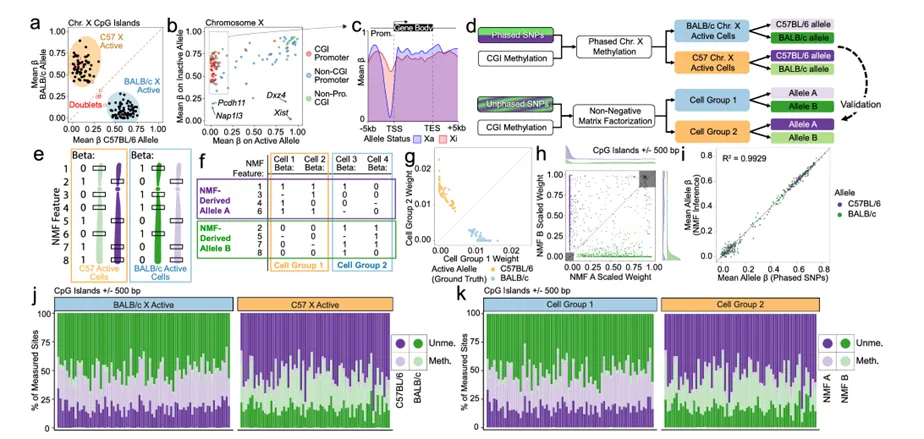
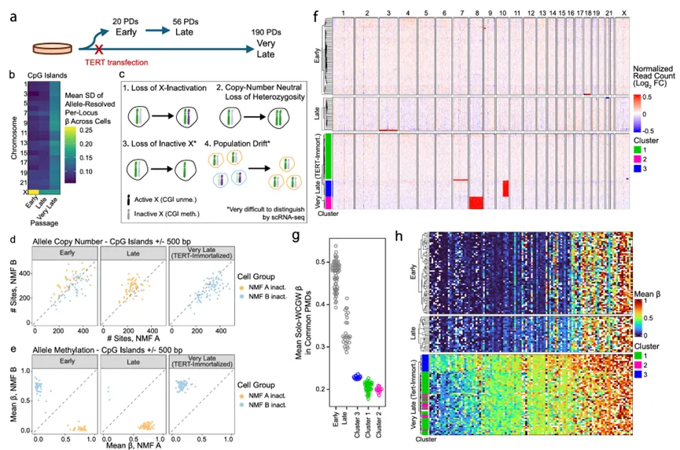

scWGBS的覆盖度能支撑等位基因级别的图谱解析吗？
原文：https://mp.weixin.qq.com/s?__biz=MzAwMzIzOTk5OQ==&mid=2247538487&idx=1&sn=3b0c01d442e323d692fb1c772021c27f&chksm=9b3c2e67ac4ba77128432f684af7bddbdff88ea8cc9a5494c93e1ab286bd8363539220547e7f#rd 合集：文献速递
** **
一、写在前面
**文章 High-coverage allele-resolved single-cell DNA methylation profiling reveals cell lineage, X-inactivation state, and replication dynamics（IF=15.7）发布于2022年《 Nature Communications》 **
DNA甲基化是一种表观遗传修饰，通过在DNA的胞嘧啶碱基上添加甲基基团来调控基因表达。它在细胞发育、健康维持和疾病发生中起着重要作用。目前已经开发出全基因组亚硫酸盐测序（scWGBS）等多种单细胞DNA甲基化分析技术，但这些技术均存在CpG覆盖度低的问题。低CpG覆盖度限制单细胞分析，难以进行细胞间比较，需要总结大范围区域的甲基化进行分析，导致无法精确鉴定细胞类型。感兴趣的同学可以看看：单细胞技术上新！一胞搞定DNA甲基化+RNA
这篇文章中，作者介绍了一种改进的scWGBS方法，称之为scDEEP-mC（单细胞深度高效的甲基-C表观基因组分析）。scDEEP-mC文库显示出一致且完全的亚硫酸盐转化，并具有高复杂性，能够在中等测序深度下实现高CpG覆盖度，还展示了如何利用这种高覆盖度的scWGBS数据来提供可解释的、细致的细胞类型鉴定。此外，他们还展示了一种改进的算法，用于在单细胞中快速且亚硫酸盐感知的ARM呼叫，通过查询等位基因特异性甲基化和人群特异性的半甲基化富集，并在单个活跃复制的细胞中分析了DNA甲基化的动态变化。能够在没有分相SNP信息的情况下，也能在单细胞中识别X染色体失活状态。
如果需要单细胞数据分析教学、生信热点全文复现、自测数据个性化分析辅导、常态化实验学习，欢迎联系客服微信[Biomamba_zhushou]。
单细胞甲基化可不卷
2026，生信基地迎来新教程：单细胞甲基化课程！免费编程课+实操直播课（2026年6月8日、6月10日、6月12日）三天手把手全程教学，助你一站式学习单细胞DNA甲基化分析！配套课程专属免费西柚云服务器和镜像，助力大家轻松上手实操！
免费服务器和镜像：学习版服务器(4线程、32GB内存)，包含开箱即用的镜像：单细胞甲基化分析的环境、工具、全部数据。注册地址：https://biomamba.xiyoucloud.net/
编程课程：Linux、R语言、Python课程视频预热学习，课后练习题作为配套打卡，学习时间：6月1日-7日。
报名费用：免费！免费！免费！
直播课表及日程安排：

报名领取学习资料与服务器：
填写问卷后：https://v.wjx.cn/vm/O1mGNtE.aspx#
联系客服微信[Biomamba_zhushou]

活动时间：2026年6月1日-14日
直播时间：2026年6月8日、6月10日、6月12日
你需要准备：一台能打开浏览器、能上网的电脑
参与方式：Biomamba生信基地同名B站、视频号同步直播~
直播预约：
视频号
B站
直播课程资料下载： https://pan.baidu.com/s/178VMmt14Q04kaEFWDB7_VQ?pwd=1r2a
提取码：联系客服[Biomamba_zhushou]领取并添加学习群
二、主要内容
一：文库构建和技术性能
scDEEP-mC基于后亚硫酸盐连接标签（PBAT）方法，经过优化，通过高效生产复杂文库，在中等测序深度下提供高覆盖度（Fig.1a）。为了防止清洁步骤中NaHSO₃的损失，作者将细胞直接分选到高浓度亚硫酸氢钠基胞嘧啶转化缓冲液的小体积中。在进行亚硫酸盐转化后，将反应稀释，直到NaHSO₃的浓度足够低，以允许聚合酶活性。然后，通过七轮带有标签的随机九聚体的随机引物合成第一条链。设计带有标签的随机九聚体的碱基组成，以补充亚硫酸盐转化基因组的组成（49% A，20% C，30% T，以及仅在CpG上下文中的1% G），在单链片段的外切酶消化和固体相反转固定（SPRI）清洁以去除小片段后，通过带有标签的九聚体的随机引物进行第二条链的合成（Fig.1a）
之后作者对小鼠肠上皮原代细胞和培养的人类成纤维细胞进行单细胞全基因组亚硫酸氢盐测序（scWGBS）分析，对scDEEP-mC方法与其他方法的性能进行比较。作者首先通过测量细胞转化率来评估亚硫酸氢盐转化，发现scDEEP-mC以及大多数基于亚硫酸氢盐的方法在CpY上下文中显示出可靠的高细胞转化率。在CpA转化方面存在一些变异性，这可能是由于某些细胞类型中该上下文存在生物学甲基化。值得注意的是，PBAL和Cabernet方法的CpY转化率较低，这可能分别归因于它们所使用的基于珠子的亚硫酸氢盐转化方法和酶促细胞转化方法（Fig.1b、e）。除此之外，scDEEP-mC显示出最小的接头污染和非常高的比对率，总体而言，scDEEP-mC在所研究的方法中显示出最高的测序效率（Fig.1c、f）。作者还测量了每个文库的基因组覆盖度。scDEEP-mC文库的产量很高，即使在中等测序深度（每个细胞20M条读段）下，也能在非常严格的读段质量过滤下覆盖30%的CpG位点（Fig.1d、g）。

Fig.1
二：细胞类型和状态分析
细胞类型和状态的鉴定是许多单细胞DNA甲基化研究中的重要第一步。为了展示高覆盖度、高效率的单细胞全基因组亚硫酸氢盐测序（scWGBS）的实用性，作者利用scDEEP-mC数据从小鼠肠上皮原代细胞中识别细胞类型。按照类型特异性的低甲基化区域，对每个细胞测量所有CpG位点的平均甲基化水平（beta值），然后按目标细胞类型进行总结（Fig.2a）。对每个细胞的每个基因启动子的甲基化水平进行总结，并使用层次聚类来识别具有相似启动子甲基化表型的细胞群（Fig.2b）。识别出两个主要的细胞群：肠细胞和免疫细胞（Fig.2c）, 每个细胞群包含两个亚组, 在一个肠细胞亚组中，参与吸收过程的基因（如Abcg5）的启动子未甲基化，而在另一个亚组中，涉及分化和发育的基因（如Nkx1-2和Satb2）的启动子未甲基化（Fig.2d）。在免疫细胞群中，作者推断两组分别代表T细胞（在Itk和Cd3复合体成员基因的启动子处低甲基化）和B细胞（在Blnk基因的启动子处低甲基化）（Fig.2e）。

Fig.2
三：等位基因解析的甲基化分析
scDEEP-mC特别适合研究复杂且尚未充分研究的DNA甲基化现象，例如半甲基化（同一等位基因的参考链和互补链上的不对称甲基化）。一般来说，要准确测量半甲基化，需要三个数据点：细胞、等位基因以及甲基化信息来源的链。链的分配在比对过程中很容易完成，但同时确定细胞和等位基因一直是个难题。为了实现这一目标，作者开发了一个基于亚硫酸氢盐的、完全可重复的Nextflow流程（Fig.3a）。之后，作者在F1代小鼠肠上皮原代细胞以及培养的人类成纤维细胞中测试了这种ARM分析方法，在这两组样本中，每个细胞生成了近100万个CpG位点的ARM信息，其中包括每个细胞约1万个双链覆盖的CpG位点（Fig.3b、c）。ARM分析突出了scDEEP-mC的高覆盖度；例如，单个细胞就足以定义印记基因Gnas位点上两个等位基因的所有差异甲基化区域（Fig.3d）。由于scDEEP-mC能够在单细胞水平上测量等位基因和链解析的甲基化状态，因此它能够进行事后（post hoc）的群体特异性半甲基化分析（Fig.3e）。这种分析可以帮助我们更好地理解不同细胞群体中DNA甲基化的动态变化，尤其是在转录因子结合位点（TFBS）上。

Fig.3
四：DNA甲基化在活跃复制细胞中维持
先前的研究表明，在连续有丝分裂过程中，晚复制区域的CpG位点更容易丢失DNA甲基化。这可能是由于DNA复制过程中产生的半甲基化CpG位点未能完全再甲基化所导致的。为了研究这一现象，研究者对早期传代和非常晚期传代的TERT永生化人类成纤维细胞进行了scDEEP-mC分析。利用公开的复制时间数据，研究者将基因组划分为13个分区，从非常早复制到非常晚复制。然后，他们测量了这些分区中未甲基化、半甲基化和完全甲基化的相对比例（Fig.4a）。在早期传代细胞中，晚复制区域的半甲基化比例更高，这与晚复制区域存在不完全再甲基化的假设一致（Fig.4b、c）。除此之外，作者还测量了每个成纤维细胞比对到早复制区域的读段比例和ARM不一致性，并能够区分几类细胞（Fig.4d）。对不同复制阶段细胞的甲基化状态分析，早期S期细胞只有少数区域具有4n拷贝数，随着细胞进入S期的后期，基因组的更多区域获得4n拷贝数（Fig.4e）。

Fig.4
五：单细胞水平上的全染色体X染色体失活表观遗传学
为了确定每个细胞中哪条X染色体处于活跃状态，研究者测量了每个细胞中每个等位基因上所有CpG岛的平均beta值（Fig.5a）。基于这种分析定义的X染色体失活状态，研究者进一步测量了所有细胞中推断出的活跃和失活X染色体上每个CpG岛和启动子的平均beta值（Fig.5b、c）。正如预期的那样，作者观察到CpG岛（CGIs）和启动子通常在失活的X染色体（Xi）上是甲基化的，而在活跃的X染色体（Xa）上是未甲基化的。
为了验证作者的分析方法，他们还利用小鼠细胞数据集进行了试点研究。小鼠基因组计划提供的高质量分相SNP能够定量验证分析结果（Fig.5d）。结果显示，通过NMF推断的细胞组和等位基因测量的甲基化状态与真实测量值非常吻合（Fig.5e-k）。进一步说明了通过使用NMF分解，作者能够从单细胞数据中推断X染色体失活状态，而无需依赖全染色体范围的SNP分相。这种方法不仅能够高置信度地判断每个细胞的X染色体失活状态，还能在没有高质量分相SNP的情况下进行分析。

Fig.5
六：单细胞水平上的全染色体X染色体失活表观遗传学
接下来，作者探讨了延长培养对雌性人类成纤维细胞中X染色体失活的影响（Fig.6a）。通过测量细胞中等位基因解析的beta值在CpG岛（CGIs）上的标准差，作者观察到早期传代细胞在X染色体上表现出高方差，这反映了细胞群体中X染色体失活状态的随机分布。然而，晚期（TERT永生化）和非常晚期传代细胞在X染色体上的ARM方差显著降低，表明细胞间X连锁CGI甲基化多样性减少（Fig.6b）。分析结果显示scDEEP-mC能够提供两条等位基因上众多位点的等位基因解析信息，从而在每个细胞中高置信度地判断X染色体失活状态。与基于转录组的方法相比，scDEEP-mC能够更准确地解释每个细胞的X染色体失活状态，避免了因转录本稀疏性导致的不确定性。

Fig.6
三、总结讨论
传统的单细胞DNA甲基化研究方法存在局限性，例如基于转录组学的方法无法提供失活染色体的详细信息，而现有的单细胞全基因组亚硫酸氢盐测序方法要么覆盖度低，要么效率不高。这篇文章中作者开发了一种名为scDEEP-mC的单细胞全基因组亚硫酸氢盐测序方法，展示了scDEEP-mC在多个方面的应用，包括细胞类型鉴定、等位基因解析的甲基化分析（ARM）、研究复杂的DNA甲基化现象（如半甲基化和X染色体失活），以及在单细胞水平上分析DNA甲基化维持动态。此方法应用前景广阔，有望成为研究正常发育和疾病中表观遗传调控复杂性的宝贵工具。

如何联系我们

 留一个领取资料、开箱即用的单细胞分析镜像的微信号[Biomamba_zhushou]，方便各位随时交流。同时我们也构建了交流群矩阵，欢迎大家入群讨论。
大家可以阅读完这几篇之后添加给生信入门初学者的小贴士
没有检索，就没有发言权
留一个领取资料、开箱即用的单细胞分析镜像的微信号[Biomamba_zhushou]，方便各位随时交流。同时我们也构建了交流群矩阵，欢迎大家入群讨论。
大家可以阅读完这几篇之后添加给生信入门初学者的小贴士
没有检索，就没有发言权
已有生信基地联系方式的同学无需重复添加

 您点的每个赞和在看，我都认真当成了喜欢
您点的每个赞和在看，我都认真当成了喜欢